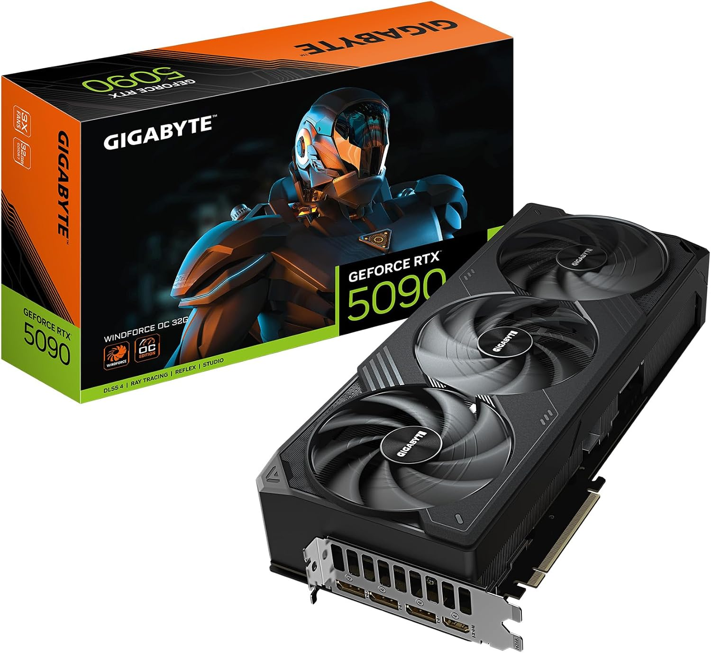
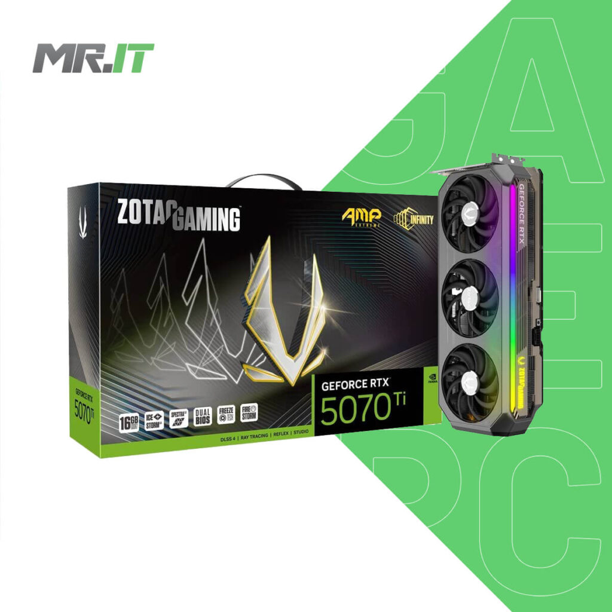
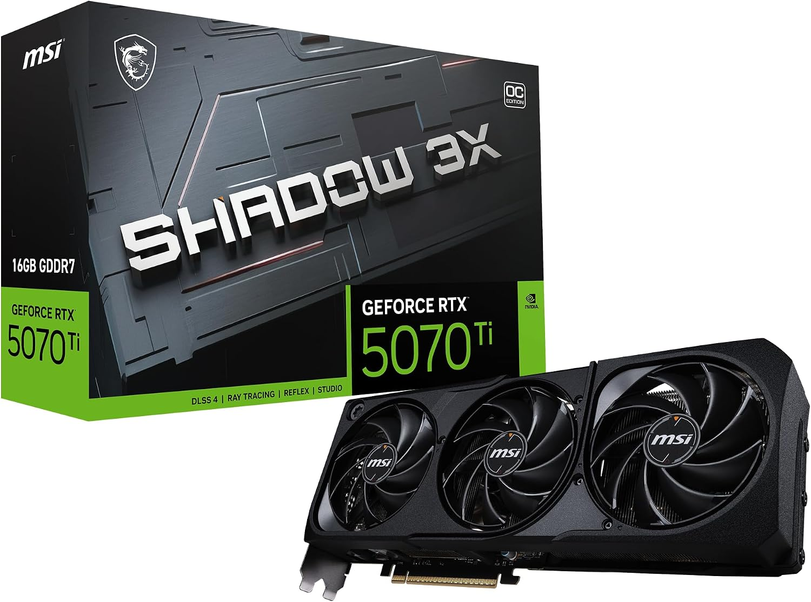

<!DOCTYPE html>
<html lang="en">
<head>
    <meta charset="UTF-8">
    <meta name="viewport" content="width=device-width, initial-scale=1.0">
    <title>5 kartu grafis(VGA)untuk gaming berat</title>
</head>
<body>

</body>
</html>
<h1>5 kartu grafis terkuat untuk gaming berat</h1>
<ul>
<li>1. Nvidia geforce RTX 5090</li>
 
<dt>raja dari segala maha raja</dt>
<dd>dengan kemampuan nya yang sudah di luar batas, dia mampu multistaking tanpa batas,mampu mengedit video dengan resolusi 4k dengan frame 450fps</dd>
<dd>dan juga mampu melibas game berat apa saja , genshin impact,wuthering wafes dan zzz bisa stabil 450fps dengan resolusi 4k rata kanan</dd>
<dd>biasanya di gunakan untuk youtuber dalam bermain gaming berat sambil live streaming, dan programer dalam pembuatan game 3D dengan resolusi super tinggi dengan grafik game kelas atas</dd>
<dt>harga baru di indonesia 2026 saat ini = Rp41.000.000</dt>
<br></br>
<li>2. Nvidia geforce RTX 5080</li>

<dt>vga kelas atas untuk kebutuhan berat</dt>
<dd>kartu grafis kelas atas dengan harga yang tidak semahal yang pertama ,meskipun beda 10 angka dengan nvidia geforce RTX5090 , nvidia 5080 kalah jauh kemampuan nya dengan 5090, tetapi harga nya relatif lebih murah</dd>
<dd>dia adalah vga kelas atas untuk kebutuhan berat dalam pekerjaan maupun kesenangan,</dd>
<dd>untuk gaming dia mampu menjalankan game GI,zzz,WW dengan 330+FPS dalam resolusi 4K rata kanan, dan itu belum di padukan dengan processor nya(masih mentahan)</dd>
<dt>untuk harga baru nya di indonesia 2026 adalah = Rp20.390.000</dt>
<br></br>
<li>3. Nvidia geforce RTX 5070Ti</li>

<dt>vga kelas atas dengan budget yang relatif lebih murah</dt>
<dd></dd>